Kirjailijat
Tutustu tarinoiden tekijöihin. Löydä uusi näkökulma tuttuun teokseen.
Kaikki kirjailijat
73 kirjailijaa · Sukunimen mukaan

1861–1921 · Suomi
Pieni havainto avaa kokonaisen mielenmaiseman.
Juha · Lastuja I–III · Rautatie · Yksin
Tutustu kirjailijaan

1832–1888 · Yhdysvallat
Omat haaveet kasvavat perheen keskellä.
Pikku naisia
Tutustu kirjailijaan
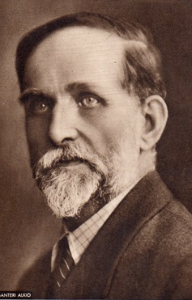
1862–1930 · Suomi
Yhteisön hyväksyntä voi ruokkia myös väkivaltaa.
Puukkojunkkarit
Tutustu kirjailijaan

1805–1875 · Tanska
Pienellä ja sivuun jäävällä on oma ääni.
Keisarin uudet vaatteet · Pieni tulitikkutyttö · Prinsessa ja herne · Vakaa tinasotamies

1775–1817 · Englanti
Tarkkoja havaintoja tunteista ja yhteiskunnasta.
Järki ja tunteet · Mansfield Park · Ylpeys ja ennakkoluulo
Tutustu kirjailijaan
1860–1937 · Skotlanti
Lapsuuden vapauteen sekoittuu myös menetyksen varjo.
Peter Pan
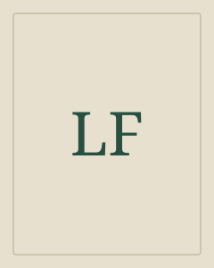
1856–1919 · Yhdysvallat
Seikkailussa jokaisella on oma toiveensa.
Joulupukin elämä ja seikkailut · Ozin velho

1818–1848 · Englanti
Rakkaus ja katkeruus kaikuvat yli sukupolvien.
Humiseva harju
Tutustu kirjailijaan

1844–1897 · Suomi
Yksityisessä kodissa näkyvät yhteiskunnan valtasuhteet.
Agnes · Anna Liisa; Kotoa pois · Työmiehen vaimo
Tutustu kirjailijaan

1890–1938 · Tšekki
Mitä tapahtuu, kun ihminen unohtaa vastuunsa?
R.U.R. · Salamanterisota
Tutustu kirjailijaan

1832–1898 · Englanti
Kun sanat vaihtavat sääntöjä, maailma seuraa mukana.
Liisa Ihmemaassa
Tutustu kirjailijaan

1873–1947 · Yhdysvallat
Muistoissa maisema ja ihminen kasvavat yhteen.
Minun Ántoniani
1824–1889 · Englanti
Salaisuus voi olla myös lain ja perheen rakentama.
Vailla nimeä
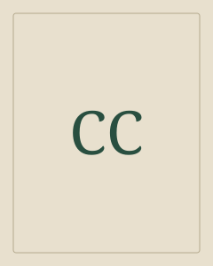
1826–1890 · Italia
Nokkeluus ei aina pelasta omien tekojen seurauksilta.
Pinokkion seikkailut

1859–1930 · Skotlanti
Pienikin havainto voi muuttaa koko tarinan.
Baskervillen koira · Kadonnut maailma · Sherlock Holmesin seikkailut · Tulipunainen tutkimus
Tutustu kirjailijaan
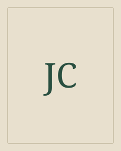
1857–1924 · Puola ja Britannia
Matka vie myös oman varmuuden rajoille.
Pimeyden sydän
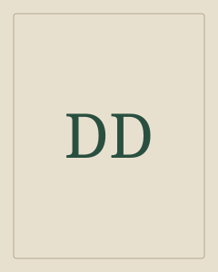
noin 1660–1731 · Englanti
Selviytyminen rakentuu pienistä käytännön teoista.
Robinson Crusoe

1812–1870 · Englanti
Suurkaupungin elämää, huumoria ja myötätuntoa.
Oliver Twist · Saiturin joulu
Tutustu kirjailijaan

1821–1881 · Venäjä
Ajatus joutuu koetukselle toisen ihmisen edessä.
Karamazovin veljekset · Rikos ja rangaistus
Tutustu kirjailijaan

1802–1870 · Ranska
Ystävyys kantaa keskellä juonia ja vaaroja.
Kolme muskettisoturia
Tutustu kirjailijaan

1874–1938 · Suomi
Kunnollinen järjestys joutuu naurun koeteltavaksi.
Kiljusen herrasväki
Tutustu kirjailijaan

1896–1940 · Yhdysvallat
Loiston takana elää kaipuu johonkin menetettyyn.
Kultahattu
Tutustu kirjailijaan
1873–1939 · Britannia
Kertoja voi tietää vähemmän kuin luulee.
Kelpo sotilas
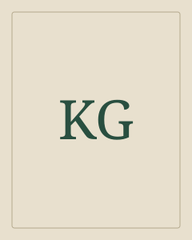
1883–1931 · Libanon ja Yhdysvallat
Arjen kysymykset avautuvat runollisiksi ajatuksiksi.
Profeetta

1859–1932 · Skotlanti
Seikkailun rinnalla tarvitaan paikka, johon palata.
Kaislikossa suhisee
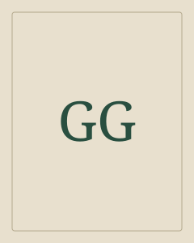
Jacob 1785–1863; Wilhelm 1786–1859 · Saksa
Sadun tuttu muoto kantaa myös vieraita ja tummia sävyjä.
Bremenin soittoniekat · Prinsessa Ruusunen · Punahilkka · Sammakkoprinssi · Tähkäpää
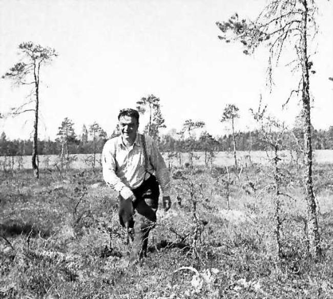
1905–1955 · Suomi
Niukka kertomus voi paljastaa kokonaisen järjestyksen.
Karavaani ja muita juttuja
Tutustu kirjailijaan
1776–1822 · Saksa
Arjen esineissä voi piillä toinen maailma.
Pähkinänsärkijä ja Hiirikuningas
1802–1885 · Ranska
Yhden ihmisen kohtalossa näkyy kokonainen yhteiskunta.
Kurjat
1854–1916 · Australia ja Britannia
Tutut sadut ovat kulkeneet monen kertojan kautta.
Jaakko ja pavunvarsi · Kolme pientä porsasta
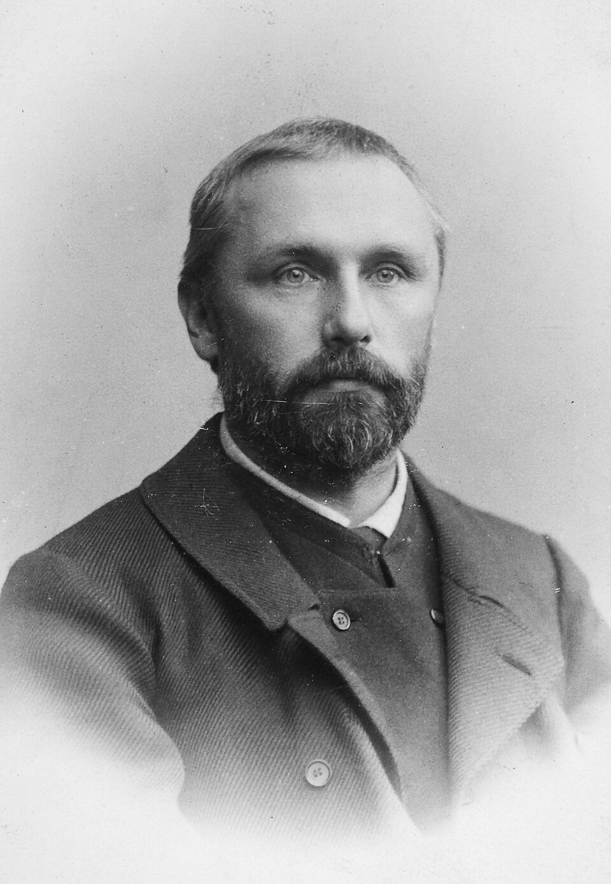
1861–1932 · Suomi
Vakaumus punnitaan tavassa kohdata toinen ihminen.
Huligaani ynnä muita kertoelmia
Tutustu kirjailijaan

1880–1943 · Suomi
Puheen takaa kuuluu se, mitä ei sanota suoraan.
Kun on tunteet
Tutustu kirjailijaan
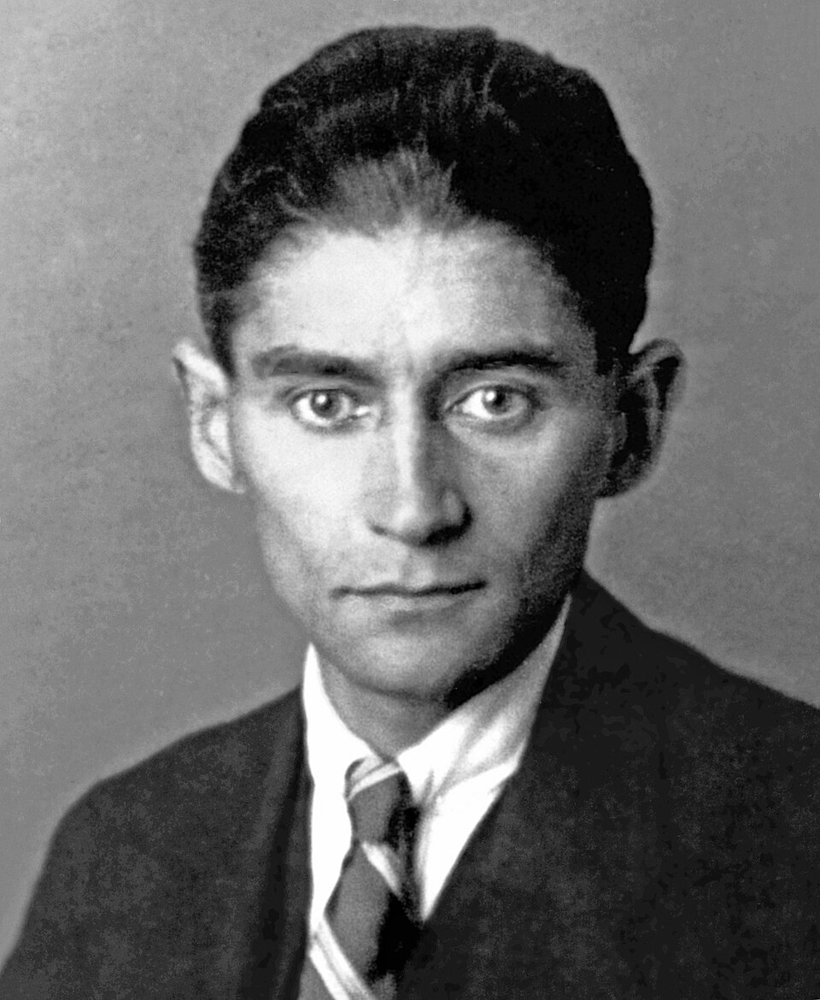
1883–1924 · Praha
Arki jatkuu, vaikka maailma muuttuu käsittämättömäksi.
Muodonmuutos
Tutustu kirjailijaan

1901–1933 · Suomi
Tiivis kuva kantaa suurta sisäistä liikettä.
Paljain jaloin
Tutustu kirjailijaan
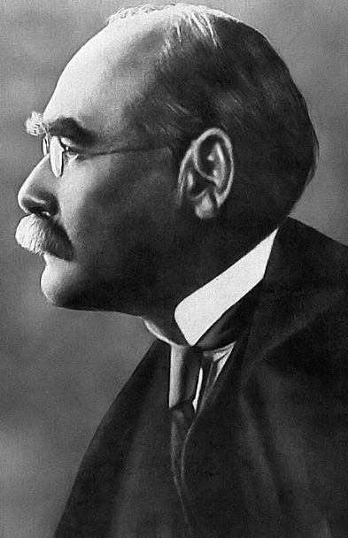
1865–1936 · Britannia
Yhteisöön kuuluminen merkitsee sääntöjä ja valintoja.
Viidakkokirja
Tutustu kirjailijaan
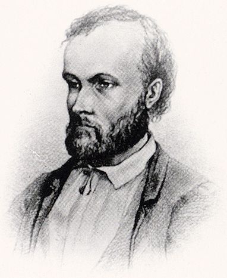
1834–1872 · Suomi
Vapauden kaipuu etsii paikkaansa yhteisössä.
Nummisuutarit · Seitsemän veljestä
Tutustu kirjailijaan
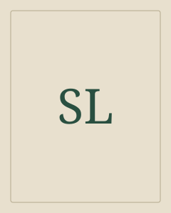
1858–1940 · Ruotsi
Maisemassa kulkevat sekä tarinat että vastuu.
Peukaloisen retket
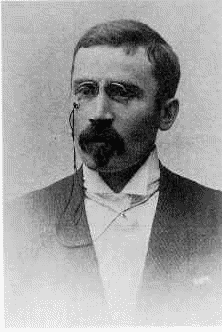
1868–1918 · Suomi
Pienestä asiasta kasvaa mahdoton tapahtumaketju.
Tulitikkuja lainaamassa
Tutustu kirjailijaan
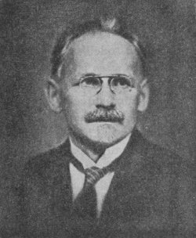
1881–1934 · Suomi
Kauneus ja levottomuus mahtuvat samaan maisemaan.
Lintukoto: Muutamia päiväkirjan lehtiä · Putkinotko
Tutustu kirjailijaan
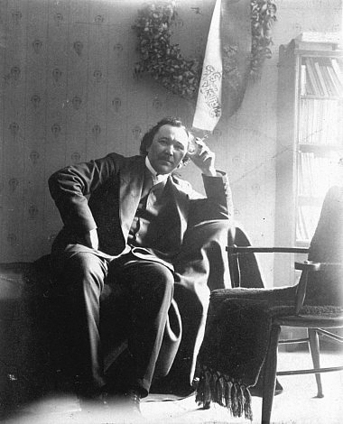
1878–1926 · Suomi
Säkeen laulullisuus kantaa sekä iloa että levottomuutta.
Sata ja yksi laulua; Hiihtäjän virsiä; Pyhä kevät
Tutustu kirjailijaan
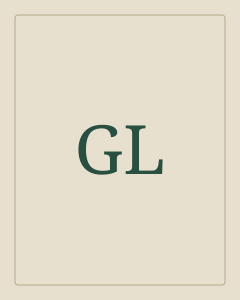
1868–1927 · Ranska
Oopperan loiston takana odottavat salaisuudet.
Oopperan kummitus – äänikirja
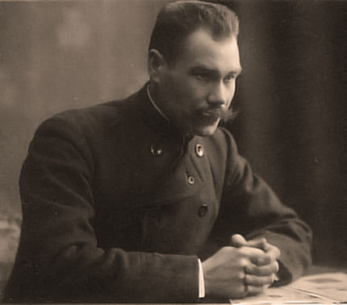
1869–1913 · Suomi
Vapauden hurma kohtaa vastuun toisesta ihmisestä.
Laulu tulipunaisesta kukasta
Tutustu kirjailijaan

1876–1916 · Yhdysvallat
Selviytyminen vaatii voimaa, mutta myös luottamusta.
Erämaan kutsu · Valkohammas
Tutustu kirjailijaan

1802–1884 · Suomi
Monien laulajien äänistä rakentuu eepos.
Kalevala
Tutustu kirjailijaan
1890–1937 · Yhdysvallat
Pelko alkaa siitä, ettei maailma selity ihmiselle.
Cthulhun kutsu
1469–1527 · Italia
Millä ehdoilla valta syntyy ja säilyy?
Ruhtinas
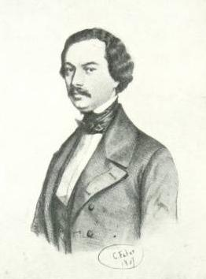
1813–1888 · Ranska
Historiallisen seikkailun taustalla on myös yhteistyötä.
Kolme muskettisoturia
Tutustu kirjailijaan
1819–1891 · Yhdysvallat
Yhden valaan tavoittelu laajenee kokonaiseksi maailmaksi.
Moby Dick eli valas
1874–1942 · Kanada
Mielikuvitus auttaa löytämään oman paikan.
Annan unelmavuodet

1903–1950 · Englanti
Kenen sanoilla todellisuus määritellään?
1984 · Eläinten vallankumous
Tutustu kirjailijaan

1862–1925 · Suomi
Lapsen kokemus tekee tutusta maailmasta uuden.
Lapsia
Tutustu kirjailijaan
1868–1920 · Yhdysvallat
Pieni näkökulman muutos voi muuttaa yhteisöä.
Pollyanna
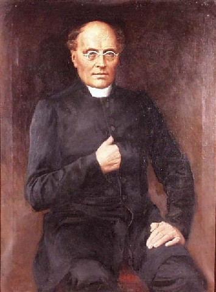
1804–1877 · Suomi
Suuri historia kerrotaan yksittäisten ihmisten kautta.
Vänrikki Stoolin tarinat
Tutustu kirjailijaan
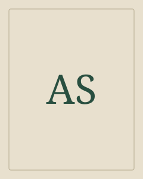
1900–1944 · Ranska
Tärkeimmät asiat löytyvät läheltä toista ihmistä.
Pikkuprinssi · Pikkuprinssi – äänikirja
1830–1867 · Suomi
Suulliset tarinat saavat kirjallisen muodon.
Suomen kansan satuja ja tarinoita
Tutustu kirjailijaan

1771–1832 · Skotlanti
Menneisyys elää ihmisten ristiriitaisissa valinnoissa.
Ivanhoe
Tutustu kirjailijaan
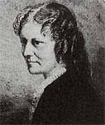
1820–1878 · Englanti
Tuttu maailma nähtynä hevosen silmin.
Uljas Musta
Tutustu kirjailijaan

1564–1616 · Englanti
Ihminen muuttuu puhuessaan ja toimiessaan.
Hamlet · Romeo ja Julia
Tutustu kirjailijaan

1797–1851 · Englanti
Luomisen vapauteen kuuluu vastuu luodusta.
Frankenstein eli uusi Prometheus
Tutustu kirjailijaan
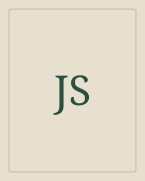
1827–1901 · Sveitsi
Koti voi olla myös maisema ja läheinen ihminen.
Heidi

1850–1894 · Skotlanti
Luottamus joutuu koetukselle vaaran keskellä.
Aarresaari · Siepattu · Tohtori Jekyllin ja herra Hyden merkillinen tapaus
Tutustu kirjailijaan

1847–1912 · Irlanti
Kauhu rakentuu tiedoista, jotka eivät vielä sovi yhteen.
Dracula
Tutustu kirjailijaan

1667–1745 · Irlanti
Vieraan maailman mittasuhteet paljastavat omamme.
Gulliverin matkat

1871–1951 · Suomi
Ihmisen kohtalo muodostuu myös muiden katseista.
Pimeänpirtin hävitys
Tutustu kirjailijaan
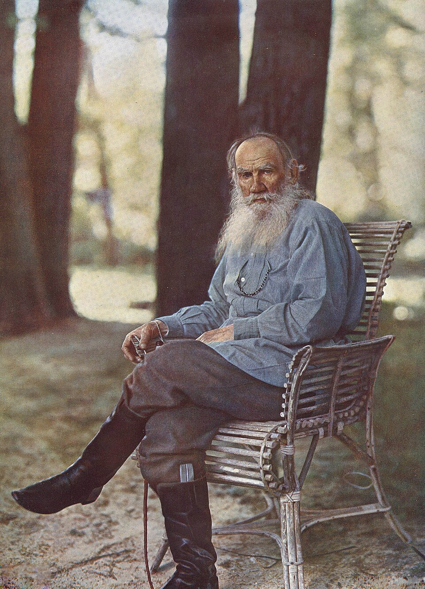
1828–1910 · Venäjä
Yksityinen ratkaisu koskettaa kokonaista yhteiskuntaa.
Anna Karenina · Sota ja rauha
Tutustu kirjailijaan

1818–1883 · Venäjä
Sukupolvien välinen riita paljastaa myös kaipuun.
Isät ja pojat

1835–1910 · Yhdysvallat
Poikien seikkailu paljastaa aikuisten maailman säännöt.
Huckleberry Finnin seikkailut · Prinssi ja kerjäläinen · Tom Sawyerin seikkailut
Tutustu kirjailijaan

1828–1905 · Ranska
Uteliaisuus vie kartan reunan yli.
Maailman ympäri kahdeksassakymmenessä päivässä · Matka maan keskipisteeseen
Tutustu kirjailijaan

1866–1946 · Englanti
Yksi mahdoton oletus paljastaa tutun maailman.
Aikakone · Maailmojen sota
Tutustu kirjailijaan

1854–1900 · Irlanti
Säihkyvä lause voi kätkeä vaikean kysymyksen.
Dorian Grayn muotokuva
Tutustu kirjailijaan
1881–1944 · Britannia ja Yhdysvallat
Lelun arvo syntyy sille annetusta rakkaudesta.
Samettipupu
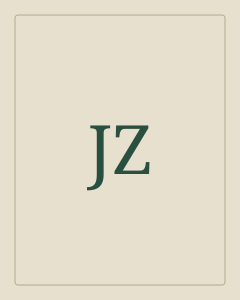
1884–1937 · Venäjä
Täydelliseksi järjestetty maailma ei siedä yksilön unta.
Me
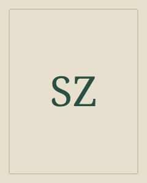
1881–1942 · Itävalta
Suljettu tila voi tehdä yhdestä ajatuksesta koko maailman.
Shakkitarina
Kirjailijaa ei löytynyt
Kokeile nimeä, teoksen nimeä tai teemaa, kuten satiiri.